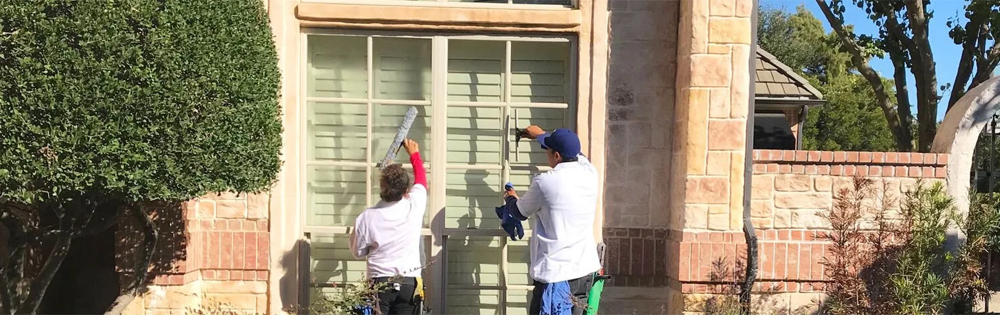

Southlake, Keller and the DFW Metroplex
Window cleaning and glass repair, inside and out.
We wash the glass, sills, frames, screens and tracks. We fix cracked panes, foggy windows and failed argon glass. Homes and businesses, one pane or a whole building.
Rainy-day guarantee
If it rains within three days of your window cleaning, call us and we'll come back and clean them again.
The whole window
Glass inside and out, plus the sills, frames, screens and tracks most crews skip.
Call back in 24 hours
Send a request and we'll ring you within a day to set up your free estimate.
Ground floor to 100 feet
A single pane at the front door, or panels several stories up on a commercial building.
Everything to do with your glass, from one company.
Most homeowners call one crew to wash windows and another to fix them. Chuck Davis started Squeaky Clean so you only need one number for both, and for the chandelier in the entryway too.
Window cleaning
Inside and out, with screens, tracks and frames done by hand.
Glass repair
One cracked pane or a run of windows and doors. Quick and safe.
Argon glass replacement
Gas-filled panes that keep Texas heat and street noise out, fitted right.
Foggy window repair
Haze trapped between the panes means a failed seal. We fix it.
Fixture cleaning
Chandeliers, ceiling fans, cabinet tops, mirrors and glass tables. No wobbly ladder for you.
Also on our list: gutter cleaning, power washing and rappelling glass work for taller buildings. Confirm current services
Our rainy-day guarantee
North Texas weather doesn't check our schedule. So we cover it.
If a storm rolls through within three days of your window cleaning, give us a ring. We'll come back and clean them again, no charge.
Getting your glass cleaned or fixed is three short steps.
Ask for an estimate
Fill in the form or call 817-938-7654. Tell us about the windows, the crack or the haze.
We talk it through
We call within 24 hours to understand the job and set a time for your free estimate.
Book the work
Happy with the price? Pick a day and we take care of the rest.
For businesses and property managers
Storefronts, offices and taller buildings. One pane at street level, or several 100 feet up.
We clean and replace commercial glass across the Metroplex with the right equipment and current safety procedures, so the building looks cared for from the parking lot.
Placeholder
What customers say
Your best Google review goes here, word for word, with the customer's first name and town.
Review slot We never write reviews for you.
Had us out recently? Leave us a review on Google. Link to confirm
Questions people ask us
What's included in a window cleaning?
The glass, inside and outside, plus the window sills, frames, screens and tracks. A complete window and screen clean is currently $20 off.
What if it rains right after you leave?
If it rains within three days of your window cleaning, call us. We'll come back and clean them again under our rainy-day guarantee.
My double-pane window looks foggy. Do I need a new window?
Fog between the panes usually means the seal has failed. We do foggy window repair and argon glass replacement, and we'll tell you which one your window needs at the estimate.
Which areas do you cover?
We're based in Southlake and work in Keller and across the Dallas-Fort Worth Metroplex.
Do you clean chandeliers and ceiling fans?
Yes. Chandeliers, light fixtures, ceiling fans, cabinet tops, glass tables and mirrors, so nobody has to balance on a ladder.
Is the estimate really free?
Yes. Send the form or call, and we'll set up a free estimate with no obligation to book.
Ready for windows you can actually see through?
Call, or send the short form at the top of the page. We'll get back to you within 24 hours.
- Phone
- 817-938-7654
- Mailing address
- 2140 E. Southlake Blvd., Suite L-629
Southlake, TX 76092 - Service area
- Southlake, Keller and the DFW Metroplex
- Hours
- Your hours
- Your email